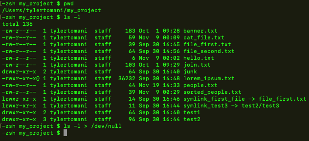

/dev/null
is a folder that output can be sent to and be supressed
any data sent there will be disgarded by unix
basic example
This is usefule when we want run a command that has output
a good example is if create a script that runs at 4am everymorning but we don't want output
such as backing up a folder
example